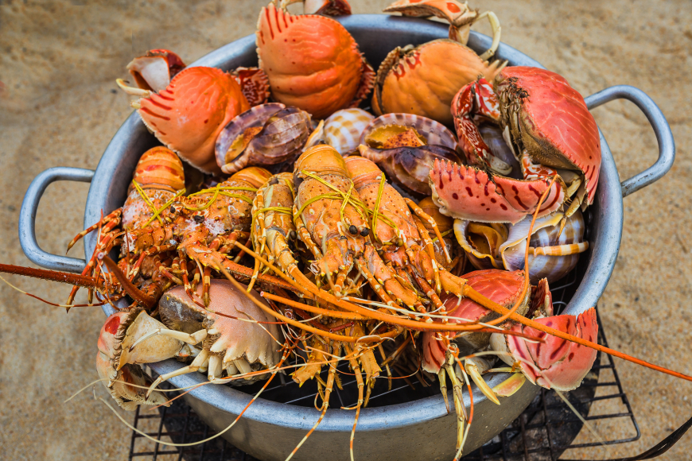
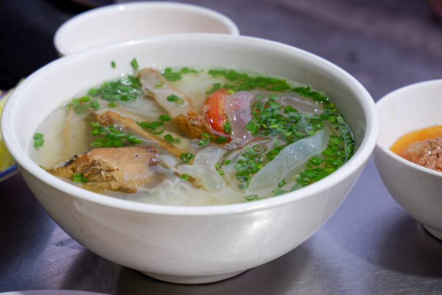
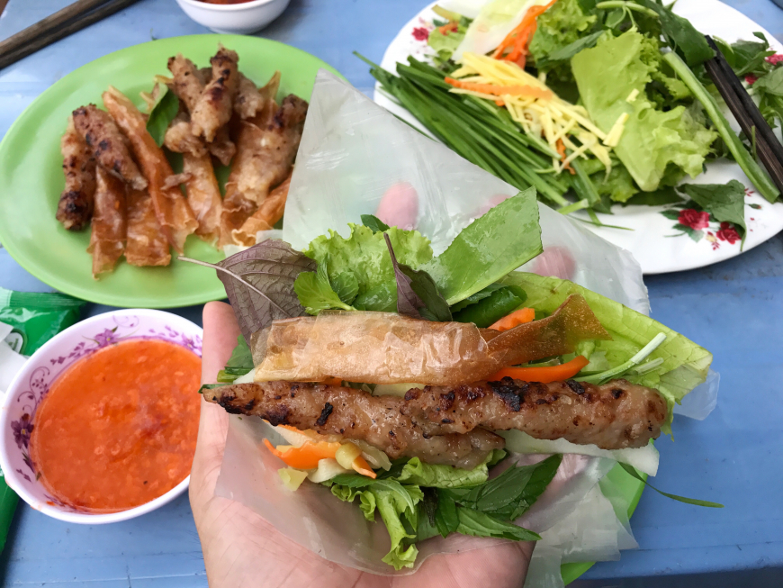
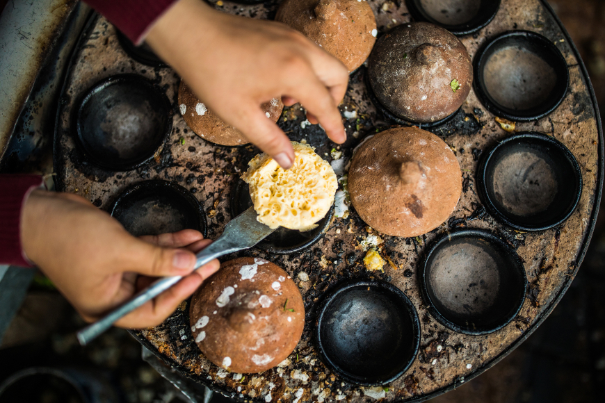

Top 5 best foods in Nha Trang you should try at least once
Nha Trang is a culinary paradise, where all of Central Vietnam's culinary cultures converge. Nha Trang is a great destination for foodies, with a wide variety of tasty foods available throughout the town. Below is a list of the best foods in Nha Trang you should try when discovering the coastal city’s cuisine.
1. Seafood Feast
.
Crabs and clams; shrimp, squid, and shellfish; fresh, fermented, steamed, or stir-fried… the seafood in Nha Trang, however, it’s prepared, is widely considered the best seafood in the country. Just north of the Tran Phu bridge, a string of seafood restaurants lines the ocean road. Point to the catch you crave from the live display swimming in buckets or chilling on ice. The waiter will charge you for your choice by kilogram and ask you how you want it cooked. Spend the evening here with a group of friends, feasting on the freshest possible seafood while the ocean wind sets the mood.

2. Bun Ca Sua - Jellyfish Vermicelli Noodle Soup
Nothing’s better for breakfast in Nha Trang than a steaming hot bowl of jellyfish noodle soup. Bun cá sứa is a vermicelli soup dish topped with jellyfish meat, grilled fish, and vegetables. The clear broth is elegantly simple and served with chili and fresh lemon. The acidity and bite pairs brilliantly with the slight brine and just a few drops elevates the entire bowl.
Bún cá is eaten throughout the country, but Bun Ca Sua is one of Nha Trang’s most famous attractions, rarely found outside the city. Just as no trip to Hue would be complete without a namesake bowl of bún bò Huế, so too is a bowl of Bun Ca Sua an imperative in Nha Trang.

3. Nem Nuong - Grilled Fermented Pork Rolls
Nem Nuong is an award-winning specialty of Khánh Hòa province. These fun finger foods are made by grilling spiced and fermented pork sausages. Making these is a dining experience, a participatory meal that’s best enjoyed with friends.
Pop the sausages on the tabletop grill while the coals are hot. Then roll them up neatly in rice paper with lettuce, herbs, and rice noodles. Dip in a specialty shrimp-peanut sauce to complete the culinary combination.

4. Banh Can - Rice Flour Pancakes
Banh can is found in other parts of Vietnam, but its iteration in Nha Trang is unique. These tiny rice flour pancakes are cooked individually in little circular clay pans. Each pancake is then served with a variety of toppings, from shrimp and squid to dried or fresh meat. Quail egg is an extremely popularBanh can topping in Nha Trang, and can be found everywhere in the city. The miniature eggs seem a perfect fit for the miniature pancakes.
Pork meatballs, fried pork skins, scallions, and shredded green mango are served together as a side dish. Toss them together with dressing and enjoy… but beware!Banh can is small enough and tasty enough to be devoured endlessly, bite after ravenous bite.

5. Lac Canh Grilled Beef
Lac Canh is a restaurant that serves grilled beef so famous that the dish is named after the restaurant itself. They do have other dishes on the menu, but most everyone comes for the Lac Canh Beef.
The beef marinade uses a top-secret recipe that consists of honey and at least ten different spices. After being marinated, the beef is cut into small pieces, each one a fragrant, juicy, bite-sized morsel. The traditional oven will be set up in the center of the table with a grill over hot embers, and the plate of raw beef will be served along with fresh vegetables and a chili-lime-salt dipping sauce. Pop the marinated beef strips on the grill and wait for about 15 minutes for each piece to be cooked to tender perfection. The complex, sweet and spicy flavor is elevated exponentially when grilled over hot charcoal. Dab the melt-in-your-mouth beef in the dipping sauce, and then pair the sweet-salty-spicy-citrus pieces with cool vegetables for an absolutely unforgettable dining experience.
The most famous Lac Canh Beef comes from its namesake restaurant, Lac Canh Grilled Beef Restaurant, but it’s not the only place that serves it. As alternatives, head to 44 Nguyen Binh Khiem, Nha Trang, to enjoy this must-eat Nha Trang specialty.